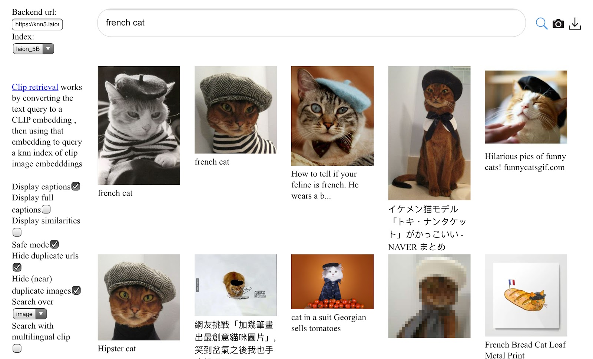
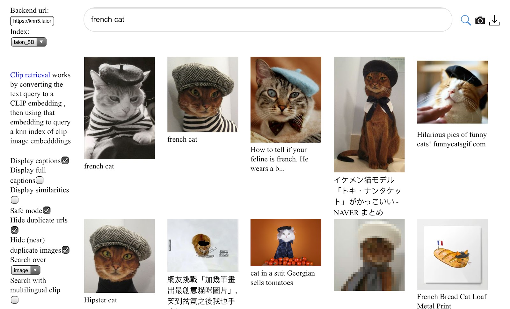

The process of training contemporary generative models requires vast quantities of training data. Dataset creators and curators make extensive decisions about how much and which data to include in a training dataset. These choices directly and significantly shape a model’s outputs (a.k.a. generations), including the model’s capacity to learn concepts and produce novel content.
Given the sheer amount of training data required to produce high-quality generative models, it is impossible for a creator to thoroughly understand the nuances of every example in a training dataset. It is impossible for them to interact with each item in the dataset, nor can they know exactly the content, source, and context of each item in the dataset.For this reason, Bender, et. al., 2021 argues that datasets should only be as large as is possible to document.
As a result, not only do their curatorial choices affect generation quality, they can also have unintended consequences that implicate legal concerns.We should couch this by saying that training dataset design is the current most important set of choices model creators have to deal with training-data-based legal concerns. Other models under development are trying to reduce these risks by attributing generations to specific examples in the data, by adding noise to obscure individual data points (i.e., differential privacy), or by limiting the scope of a model to an application where copyright and privacy are less of a concern (e.g., Disney training a model on screenplays for which its own all of the relevant copyrights).
For example, generative models have been shown to generate text from copyrighted books, API keys, contact information, and images with trademarks.
The inability to exhaustively inspect every training-data example is not specific to generative AI, nor is it a new problem. From the advent of the “Big Data” trend of the last few decades, comprehensively understanding datasets has proven to be a difficult and elusive challenge. The ways that researchers have approached this challenge are instructive for understanding contemporary practices in dataset creation and curation for generative AI.Researchers’ assumptions and norms, while perhaps fixed as a cultural practice (Couldry and Hepp, 2017; Bowker and Star, 2000) , are not technical requirements. There are other ways that model creators could collect and curate (meta)data that would have a marked change on these assumptions and their consequences. We will return to these possibilities later.
In this chapter, we begin with a history of datasets to understand how incentives, compute, and model design have impacted dataset development, then discuss some ways that datasets and dataset collection practices have changed over time. We loosely trace a common pattern in both text and image models: Early work on manually-constructed model specifications that did not ingest or learn training data; a transition to learning models from hand-annotated data compiled from public domain sources; and, the modern tactic of scraping massive amounts of unlabeled data from across the web. In light of this most recent approach, we discuss the choices dataset creators make when building modern-day, generative-AI datasets. Finally, we acknowledge both the difficulty in making educated choices and the impact those choices have on the resulting models.
A Brief History
In this section, we’ll first discuss some historical language and image datasets. Before we get into the details, we want to emphasize that these early language and image generation systems did not use datasets in the same way that we think of datasets today. Whereas older generation systems often leveraged hand-crafted patterns, modern machine learning uses statistical methods to learn patterns from data. For example, early chatbots, such as ELIZA (1966) and ALICE (1995), and early developments in novel (1973) and story (1993) generation used techniques from classical artificial intelligence to generate text based on hand-crafted rules and grammars.The rule-based machine translation systems that pre-dated statistical machine translation are good examples of this approach.
Similarly, early work in the field of computer graphics on photo-realistic image generation focused on constructing mathematical models of 3D objects, such as the famous Utah teapot (1975), and then rendered them as 2D images. This work developed algorithms to mimic the shading and lighting effects of the real world, some of which were grounded directly in mathematical models from physics and optics. Other work used procedural algorithms to generate realistic textures and add them to surfaces.
Language Datasets
In the following years, researchers transitioned from techniques using manually-specified models to techniques that trained models on data. Of course, this shift depended on the availability of usable datasets. Many early such datasets grew out of academic research endeavors in natural language processing (NLP) – e.g., early monolingual datasets like the Brown Corpus and the Penn Treebank. These early research datasets tended to be collected from literary, government, and news sources, and were densely annotated with linguistic structure, such as parts-of-speechWhether a word is a noun, a verb, an adverb, etc.
and syntaxThe hierarchical structure of words in a sentence.
annotations.
Early work in NLP assumed that building a language understanding system would require encoding this type of linguistic knowledge and mechanically applying it.For example, a model might use linguistic structure to understand that in the sentence “The dog fetched the ball.”, “the dog” is a noun phrase serving as the subject of the sentence. Additionally, the model might infer from context that a dog is the sort of thing that is more likely to fetch than a ball, and that a ball is the sort of thing that a dog might fetch.
Building annotated datasets was a labor-intensive process and was often completed by professional, highly skilled annotators at organizations like the Linguistic Data Consortium.Some datasets, such as the Penn Treebank, were based on crowdsourced annotations by non-experts.
Then, as the Internet grew and expanded, training datasets began to leverage the corresponding growth in the number of electronic and digitized records. Some notable datasets include English Gigaword (2003), sourced from news articles in English; the Enron Emails dataset (2001), sourced from emails released by the US federal government during its investigations of Enron’s massive accounting fraud; and the One Billion Word Benchmark (2013), sourced from government documents and news.
Most of the datasets we’ve mentioned so far consist of material that was either a matter of public record or explicitly licensed for research use. However, rapid technological developments, which both demanded and facilitated the use of increasingly larger amounts of data, put pressure on expanding to other data sources. For one thing, it became apparent that bigger datasets led to superior language models. For another, novel algorithms and advancements in computing hardware made it possible to process datasets at previously unprecedented scales and speeds.
Efforts to build and maintain responsibly-sourced and hand-curated datasets could not keep apace with these changes. Neither could the production of manual data annotations; however, as discussed below, this presented fewer problems than anticipated, as larger models trained on larger datasets proved able to automatically pick out patterns without such curated information. Machine translation provides one of the earliest examples of generative applications to work with such large text corpora. Dataset creators assembled datasets of texts in two or more languages on the same topics from multilingual data sources, such as United Nations documents and news sites. Some of these datasets had aligned text (i.e., a specific sentence in multiple languages), but many others, like Europarl, were simply transcripts of the same parliamentary meeting in multiple languages. These datasets were used to build statistical language models which would learn to output translations for any input sentence.
The 2010s saw a further shift from public domain data to web-scraped datasets compiling publicly available data, which can exhibit varying types of copyrights.Public domain typically refers to government records (such as Europarl) or works for which copyright protections have lapsed or expired. Judicial opinions, for example, are in the public domain. They are not copyrightable, which means that anyone can copy them for any purpose, and renders moot questions of copyright pertaining to content generated from such records (Wheaton v. Peters, 1834) Publicly available data, in contrast, is widely available but may have legal restrictions that purport to limit certain rights to certain users. For example, fanfiction uploaded to An Archive of Our Own can be freely read by anyone, but its authors-slash-users retain the copyrights in their works.
Some examples of these web-scraped datasets include the Book Corpus (2015), which scraped 11k books from Smashwords, a website for self-published e-books, and the WritingPrompts dataset (2018), which scraped the r/WritingPrompts subreddit.Reddit recently changed its terms of service, partially in response to large generative-AI companies scraping its website for training data. Twitter also recently rate-limited its platform ostensibly in response to web-scraping.
Other datasets included data scraped from crowd-sourced platforms, such as Wikipedia and OpenSubtitles, for which it can’t always be validated that the user has ownership rights over the content they upload.
For the most part, these datasets were not annotated with the rich linguistic information that accompanied older datasets. Not only were these annotations infeasible to collect on massive datasets, but advancements in machine-learning methods made them unnecessary for strong performance on many language tasks.Up until 2016, Google Translate used phrase-based translation, which broke sentences into linguistic parts to translate separately. These techniques have since been replaced by neural networks.
These 2010s-era typically datasets collected documents from a single website. In contrast, more recently we have seen the growth of datasets that instead attempt to sample from the entirety of the web. Some prominent examples are RealNews (2019), C4 (2019), and WebText (2019). All current state-of-the-art large language models are trained on datasets scraped broadly from across the web. Separately, many companies maintain databases of data their users generate. Some of these companies have released samples or subsets of these datasets for external use. Such datasets may be annotated with user action. For example, Amazon’s Review dataset, released dataset in 2018, contains 233.1M examples with customer ratings, and Netflix’s recommendations dataset contains 100M customer ratings. Other popular datasets in this vein are IMDb movie reviews and the Google Books N-gram corpus (2.2 TB of text!).Some of these datasets contain data from sources with mixed ownership, and thus have been subjected to copyright claims. Notably, authors and publishers sued Google for copyright infringement over its collection and use of scanned books. Google ultimately prevailed, following a decade of litigation. (Authors Guild v. Google, 2015)).
Image Datasets
Image datasets have followed a similar overarching trajectory – from not using training data, to assembling research-oriented datasets from public-domain information, to scraping massive amounts of data from the web for commercial purposes. Until relatively recently, most applications trained on image data focused on classifying rather than generating them. Early datasets include MNIST (1999), which consists of 60,000 black-and-white images of digits; CIFAR-10, which contains 60,000 photographs of objects from 10 classes, including airplanes, frogs, and cats; and ImageNet (2009), which has over 14 million images divided among 1,000 classes. Deep learning researchers relied heavily on these datasets to develop methodologies for image classification, and early work on machine-learning-powered image generation, including generative adversarial networks (GAN) (2014) and denoising diffusion models, followed suit.
For many years, image generation models were not powerful enough to capture the diversity of all image classes represented in a dataset like ImageNet.This is not in contradiction with the earlier point that larger training datasets tend to produce better models. Rather, it is the case that larger, more capable models enabled more effective utilization of large datasets.
Thus, more narrowly-scoped (but still large) datasets allowed for the development of models with higher-fidelity generations. Prominent examples include Celeb-A (2015) with 200k close-up images of faces; Caltech-UCSD Birds with over 11k bird photos; and, Oxford Flowers 102 with 1k flower photos.
 

Of course, the most exciting models today don’t just generate an image from a single class identifier like “bird” or airplane.” Models like Stable Diffusion or Imagen can parse complex natural-language descriptions to generate novel and complex images in a wide variety of styles.
Good text-to-image models require the use of training images with rich captions describing them. Early GAN-based text-to-image models used datasets with human-written descriptions of the images in the Birds and Flowers datasets. For this reason, datasets intended for image captioning research, like MS-COCO (2015), were also used in reverse for this purpose: Such datasets had their examples flipped – i.e., using the caption labels as training data, and the image as the label – so that the resulting models could generate an image from a caption.
Just as with language research, it quickly became clear that larger datasets resulted in superior models. In addition, training datasets needed to be high-resolution in order to create high-resolution, high-fidelity generations.
LAION-5B (2022) met this need with a dataset of over 5 billion image-text pairs, created by extracting images with detailed alt-text descriptionsAlt-text descriptions of images are an accessibility feature intended for situations where an image cannot be rendered. For example, visually impaired people using screen readers will read alt-text in lieu of seeing the image.
from the the Common Crawl web-scraped corpus. LAION-5B is the dataset on which most state-of-the-art open-source text-to-image models are trained.
Today’s Datasets
As discussed above, the datasets used to train today’s large language models are massive and predominantly contain data scraped from the web.The Pile, ROOTS, and Chinchilla all combine data scraped from the web with additional more-curated data sources.
Among popular language datasets, the Pile and C4 are both 800GB; ROOTS is 1.6TB of pre-processed text, and Chinchilla (which is not publicly released) is 5.3 TB.The number reported in their paper was 1.4T tokens, or 4x the training data for a different language model, Gopher, which used 300B tokens. The Gopher creators sampled 12.8% of the MassiveText dataset_, which contains 10.5TB of data. 0.128 * 4 * 10.5TB = 5.3TB
These datasets are of a completely different scale than those mentioned in prior sections, and in turn present unprecedented challenges for data maintenance and curation. In this section, we describe some of these challenges — the ramifications of datasets that are orders of magnitude too large for their creators to manually inspect each data point. We’ll compare modern datasets with the MNIST image dataset (mentioned above), the quintessential small dataset in machine learning.Over 6000 papers cite MNIST directly and a Google Scholar search returned 76,900 articles that mention MNIST. MNIST has become a generic term for “small, standard dataset” so other datasets like Fashion-MNIST, which has photos of clothing, also appear in the search results.
In doing so, we emphasize that datasets are manufactured objects; there are numerous choices that dataset creators and curators make in the production and maintenance of datasets.
Choosing Training Data Sources
During the data collection process, creators make dozens of choices about what data is relevant. For one, modern datasets tend to be built by picking and scraping entire sources of data (i.e., corpora) that already exist on the web. The creator decides to include or exclude entire corpora, rather than picking individual examples, and then applies automatic filters to the included datasets. These datasets can come from different sources: language datasets can be scraped from Twitter, code repositories, personal blogs, advertisements, FanFiction, PasteBin dumps, search-engine optimization text, and so on; image datasets can come from data aggregators like Flicker, Shutterstock, and Getty, or be scraped directly from the web.
Dataset creators make assumptions when choosing what data to scrape. For example, when scraping html files, they make decisions about whether or how to remove tags. In choosing one domain over another, dataset creators make assumptions about the content of each domain. For example, if the dataset creator wanted to create a model that was able to give coding advice, they might choose to include Stack Exchange or GitHub data as well.GitHub contains far more than just code. For example, many repositories also contain READMEs written in prose. Additionally, since many websites and blogs are hosted on GitHub, GitHub can also contain personal, narrative stories.
Alternatively, Wikipedia is generally a popular source of data because it contains curated articles on a diverse array of topics.Because of this diversity, Wikipedia may be included when training wide-purpose applications like chatbots. However, Wikipedia isn’t conversational. So, for interactions with the generative model to feel fluid and natural, the dataset creator may choose to also include chat data, such as YouTube subtitles, HackerNews conversations, or Twitter free-for-alls.
For both image and language datasets, creators can also make the decision to scrape from a crawl of the entire Internet, rather than specifically seeking out certain websites or domains.
The composition of languages within a dataset is another important question. Should the dataset be primarily one language? Should it include as many languages as possible? If so, should the distribution of examples be balanced equally? Each answered question leads to even more choices. If an English sentence includes a single Italian word, is that sentence English or Italian? What about the sentence, “I walked from campo dei fiori to santa Maria degli angeli?” Additionally, many uses of language are contextual and cultural. Before René Magritte’s 1929 painting The Treachery of Images, one would have said that the sentence “Ceci n’est pas une pipe” was French, but today, it would also be commonly understood by many English speakers. Further, different languages vary with respect to how they convey similar ideas; German uses of long compound words to reflect complex concepts, while other languages like Japanese may only use a single logogram.
We know that the balance of genres in a dataset affects the resulting model’s knowledge and abilities. A model trained on Project Gutenberg, a collection of public-domain eBooks whose most recent entries were first published in the 1920s, will clearly be much worse at reciting recent facts than one trained on Wikipedia. While this example might seem intuitive and obvious, we mostly don’t understand with specificity how upstream dataset collection choices affect downstream generations. As much as we would like to make each data-selection decision scientifically, on the basis of good evidence and a careful weighing of competing goals, it is cost- and compute- prohibitive to run a different experiment for each decision. Thus, many of these decisions are simply choices the dataset creator makes, without much validation.
As a concrete example, consider the Pile (2020), a popular publicly-available dataset for training language models. The Pile’s creators chose to include multiple “academic” datasets, like PubMed, arXiv, and FreeLaw, as well as code from GitHub. This means that models trained on the Pile will have seen medical literature, legal literature, and code. A model not trained on code would have a much harder time generating it.This doesn’t mean that models not explicitly trained on code can’t generate code. Webscraped data is not cleanly separated into different semantic domains, and there will inevitably be some code mixed in with whatever text the model is trained on.
are not explicitly scraped from the web. Figure produced by Ludwig Schubert (adapting Figure 1 from The Pile to create a .svg version); reprinted with permission.
Identifying “Good” Data Examples
While dataset creators frequently say they want “clean data,” the term is a misnomer. Instead, dataset creators typically mean that they want a dataset that creates a “good model.” Defining what “good” means similarly requires dataset creators to make many choices.
This is true even for models with seemingly clear goals, for which “good” can seem easy to define. The creators of MNIST wanted a model that could classify images of handwritten digits, and the dataset they collected was tailored to this single, specific goal. However, models trained on MNIST can (and have been) used in a variety of different tasks, with varying degrees of success. For example, MNIST-based models have been useful for digitizing zip codes on postal envelopes; however, they may be less useful when applied to writing that is handwritten or drawn in more stylized writing, e.g., in artwork.
Defining “goodness” is even more difficult for generative AI, in part because generative AI is significantly more flexible (literally, generative) than traditional classification tasks that have clear output labels and single unambiguously correct answers. This flexibility is a desirable feature for generative AI; we want our models to do many things. For example, we expect a large language model to be able to answer factual questions about the world, but also to tell fictional stories, give relationship advice, and de-escalate when asked to generate toxic content.At least, this is true right now. It is possible that, over time, it may be desirable for a chatbot to exhibit more narrow functionality: A chatbot that supplies financial advice may be subject to regulation, and it may not be appropriate for it to also give relationship advice.
The multiplicity of uses (many of which are yet to be determined) means that “good” is extremely under-specified, and thus many different choices of training datasets could be “good” in different ways.Many generative AI models are referred to as “general purpose” (this is the G and P in OpenAI’s GPT). Models are in fact never completely general because data and modeling choices create preferences and limitations. However, the intent of some creators is to make the model as general as possible. When model creators say “good” they sometimes mean they want “helpful and harmless models”. Sam Altman also used this phrasing during the Senate Judiciary Committee hearing on AI. The complex relationship between “general purpose” models and specific end uses also predates the recent uptick in generative AI (Cooper, et. al, 2022).
Filtering Out “Bad” Data Examples
“Good” data is hard to define, and “bad” data is similarly ambiguous. To be a little more specific, consider “toxic content” as an example of “bad” data for training a conversational LLM meant for wide public use. We might want to filter out “toxic content” from the data we scrape and not include it in our training dataset – an easy goal to state but hard to implement.Dataset curation choices are entangled with overall learning goals. Even if we have a fixed and agreed-upon definition of what content is “toxic,” a model trained on a “good” dataset that contains no toxic content may be “good” in that that it does not generate toxic content on its own, but fail to be “good” in that it does a poor job of summarizing and explaining a user-provided article that contains toxic content. The point is that “good” is a slippery and can mean different things in different parts of the generative AI pipeline. This is also why “helpful” and “harmless” are sometimes linked as joint goals; they are both important, but they are distinct and can be in tension with each other.
“Toxic content” is ill-definedAntoniak and Mimno 2021 demonstrate how measurements of bias can themselves be biased based on choices of what topics to measure.
and constantly evolving. Metrics of toxicity can be correlated with other aspects of text, such as sexual explicitness.The Perspective API tries to identify “toxic” content, best understood here as “stuff you don’t want advertisements associated with.”
For example, the Texas Liberty County Vindicator posted the full text of the Declaration of Independence and Facebook’s moderation flagged it as hate speech. Additionally, different individuals or groups may have different interpretations of the same text, complicating the process of deciding what data to exclude.For example, Dodge, et. al., 2021 discusses how the collection process for the C4 dataset disproportionately filters out data related to certain demographic groups. One way to approach this challenge is to adopt a more flexible and inclusive approach to filtering criteria and analysis. This may involve working closely with individuals or groups who have expertise in the cultural context under study and being open to multiple perspectives and interpretations. Overall, it is important to recognize that cultural data is often fluid and dynamic, and our understanding of it may change over time. Therefore, any process for determining what data to include and exclude must be adaptable and open to revision as new insights emerge. It may also involve acknowledging the limitations of quantitative methods in capturing the full complexity of cultural data and being open to using qualitative approaches that allow for more nuanced and contextualized analysis. Participatory data collection, or data stewardship, has been a long-standing discussion. A good reference to start from is archives of the Participatory Approaches to Machine Learning Workshop.
Further, even if we agree on what is “toxic content,” there unfortunately isn’t a clear consensus on whether excluding such content frm the training data is an effective strategy for preventing it from being generated. While some researchers propose removing any data deemed “toxic,” others disagree. They believe a better strategy is to control model outputs, not inputs; in their view, including some “toxic” data helps models to identify it and thus stop its generation.Longpre, et. al., 2023
Identifying “toxic content” (and including or excluding it) is only one of many classes of many, many choices that dataset curators have to just make. And no set of choices is every complete. Any fixed, black-and-white process of determining what data is worth including or excluding will miss cultural connotations that resist quantification and objectivity Whatever processes we use for deciding on “good” and “bad” data must be adaptable and open to revision as society and model uses evolve.
Further, the scale of today’s datasets encourages – indeed, requires – dataset creators to use automatic methods to decide what data to include or remove. For “toxic content,” it is common practice to use a classification model (typically one that is small and fast to run) to determine what to exclude. This classification model might have been built using human annotations, or it might itself be built with automatically derived labels.A popular approach right now is to train a classifier that assesses quality using a training dataset where examples are labeled as high-quality if they come from a trusted source like Wikipedia or Books, and low-quality if they come from the general Internet.
The model is then used to automatically label every example in the dataset, and examples with negative labels are removed. For example, LAION-Aesthetics is a subset of LAION-5B containing only images which an automatic classifier labeled as “aesthetically pleasing.” Such an automated process also contains assumptions and choices, and likely does not perfectly capture nebulous concepts like “toxicity.” It’s training data choices all the way down.
Other difficult and contestable choices around dataset curation have to do with the possibility of errors. Daatasets where each item is labeled can contain errors because there is more than one way for an example to be labeled, resulting in misleading or incomplete labels.For example, an analysis of ImageNet’s biodiversity found that 12% of the dataset’s wildlife images are incorrectly labeled.
In image-caption datasets, an image’s caption may describe only one part of the image, or it may not even correctly describe the content of the image at all. In any language dataset, the text might not be in the language we expect it to be, or it could be written in multiple languages, or it might not be natural language.One of the authors of this paper spent days confounded by why a model trained on Project Gutenberg was generating gibberish. It turned out the gibberish was chess moves, and that 18 million characters of chess notation were in the dataset.
The massive size of today’s datasets makes it extremely challenging to systematically identify and remove examples with these types of errors.Just consider that MNIST, with 60,000 examples is 97,500x smaller than LAION, with 5.85 billion.
That being said, modern models are remarkably capable of performing tasks in spite of misleading or mislabeled examples.Understanding Deep Learning (Still) Requires Rethinking Generalization
Generative language models are typically trained with the objective of predicting the next word in the sentence given the previous onesSome modern LMs are trained with other objective functions, such as a fill-in-the-blank-style objective called span corruption. Many generative image models are trained to reconstruct a given training example.
and are used to perform tasks they weren’t explicitly trained to do. None of the current language models were explicitly trained to answer questions about Dolly Parton, but they will deliver topical and appropriate responses to questions about her. Additionally, modern models can also perform mechanical tasks like reversing a sentence.Try it yourself in ChatGPT. Providing examples of what “reversal” means in the prompt to the model can help the model understand the pattern, but models are not successful every time and are very sensitive to the format of the prompt.
Testing Training Data Choices
Ideally we would like to know exactly how dataset creation choices will impact the generative model. The standard approach to testing this is to train models on different slices of training data, then evaluate how the removal of each slice impacts the resulting model’s performance. This approach is called ablation testing. As a concrete example, we could train the same model with and without Wikipedia from the dataset, or with and without text classified as “toxic”, and then observe how well the resulting models perform on tasks like question-answering and “toxic” tweet identification.
Unfortunately, ablation testing is prohibitively expensive in contemporary generative AI. Today’s models are massive (billions of parameters) and can cost millions of dollars to train, and therefore are typically only trained once (or a small handful of times) on the whole training dataset. While it could be feasible to do ablation testing with smaller models, they don’t always yield the same results as testing on larger ones. Model creators simply can’t afford to test every possible definition of “toxic” or every combination of “include/exclude” for different types of data.
It is worth emphasizing that training models at such large scales is also a choice. We could choose to train smaller models on smaller datasets for which ablation tests are tractable. But, doing so would sacrifice the powerful generalization capabilities of large-scale generative AI.For a while, it was understood that models develop capabilities at larger sizes (Wei, et al., 2022), though recently Schaeffer, et al., 2023 has challenged this understanding.
An important takeaway, though, is that running one pass on a giant training dataset (i.e., not being able to do ablation testing or other procedures that involve multiple training runs, like hyperparameter optimization) is not a foregone conclusion. This reflects choices in what developers and researchers have opted to prioritize for developing generative AI.
Understanding Provenance
Automated data collection processes can obscure provenance. For large, web-scraped datasets, dataset creators might know that an image or a paragraph of text is from a particular website. Unfortunately, website origins don’t necessarily correlate with authorship, so that content’s presence on a website doesn’t prove that the website had permission to post the content. For example, chat logs are typically between two or more people. Both people do not need to consent for one person to put that chat log somewhere public, where it could become part of the dataset. The chats could also become public through a data leak, or as a result of malicious action. (For example, Sony executives’ emails were stolen and posted by North Korean hackers, and personal chats were leaked during the GamerGate harassment campaign).GPT2, another language model, generated a conversation between two real individuals using their usernames. This conversation wasn’t exactly as it appeared in the GamerGate harassment campaign, but was about the same topic. More on this topic in this blog post and in Brown, 2022.
The entire movie of The Fast and the Furious could become part of a dataset without the dataset creator’s knowledge because a Twitter user decided to tweet out the entire movie in two minute clips.Another example of a copyright concern involves license laundering on GitHub: individuals taking GitHub repositories that have a license and reposting it without the license.
To be clear, this reality is also a reflection of choices in contemporary dataset practices. Older datasets tended to be more curated and constructed, which made the provenance of the data in them clearer. For example, the MNIST dataset was built by Mixing two datasets from the National Institute of Science and Technology: one of handwritten numbers, one written by high school students and the other by employees at the US Census Bureau. The provenance of each digit was clear.
Instead, with the choice to move away from manual curation toward scraping massive datasets, provenance has become harder to track and understand. This can cause a host of problems, such as issues around attribution. Additionally, without provenance and inferred cultural context, data may look unexpected. For example, a generative AI model may refer to “sex” as “seggs” because individuals online have adapted to censorship by using homophones like “seggs” to discuss sensitive topics.
Using Data that We Don’t Fully Understand
As datasets are used more, our understanding of them improves. Older datasets have been around long enough for researchers to develop an understanding of their flaws. For MNIST, we even know how many and which examples are labeled incorrectly.Northcutt, 2019 investigated mislabeled images in MNIST. Anecdotally, Yann LeCun has been overheard claiming he knows every mislabeled image in MNIST.
The rapid pace of generative AI research makes it difficult for analysis of existing datasets to keep up with the development and adoption of new ones. This too is a choice; developers could choose to wait to study a dataset more carefully before training with it.Of course, datasets can also become stale if analysis takes too long. Just as choices are everywhere, so are tradeoffs.
Additionally, an increasing number of popular generative models are trained by companies on non-public datasets – making outside analysis impossible. For example, we don’t know much about the training data for ChatGPT, nor the difference between ChatGPT’s and Claude’s datasets. However, to the extent that similarity between training data and the user’s downstream task has an impact on the generative AI’s performance on the tasks, companies should feel motivated to document and release additional information about what was in the training data to enable users to choose the right API for their application.
Despite this, there has been significant push within the ML community for dataset creators to document their datasets before releasing them. One common recommendation is to create a datasheet that collects information about how the data was collected, the motivation behind it, any preprocessing that was done, and future maintenance plans.Many datasets available on HuggingFace (a popular open-source model and dataset repository) now have datasheets attached to them.
As an example, this is the Pile’s datasheet. However, even an extensive datasheet like the Pile’s still still answers only a tiny fraction of the questions you could ask about what data it contains, why it was included, and how it was collected.
Conclusion & Next: Copyright and Training Data
By now, it’s hopefully clear just how many choices dataset creators and curators make to produce and maintain datasets. To describe some of these choices, we discussed early dataset history, and showed how text and image generation systems once didn’t rely on training data in the traditional sense. For example, after the move from more classical AI rule-based techniques, text datasets involved carefully curated, hand-annotated data. Today, in contrast, the massive datasets collected to train generative AI models are scraped from the web, and are far too large to manually examine completely.
The size of these datasets has presented a slew of new types of choices when creating datasets, such as what (and how) to include and exclude different types of data. The lack of consensus on what to include in datasets is a reflection of the lack of societal consensus on what we want the capabilities of generative AI to be, in addition to the technical limitations we currently face. Today’s datasets are shaped by today’s influences: present model sizes, availability of data and compute, open-ended goals (and sometimes, a lack of desire to specify a specific goal), business incentives, and user desires. Ultimately, the way tomorrow’s datasets are collected and curated will depend on factors that model users, governments, and businesses influence.
One particular concern from today’s dataset creation practices is that scraped datasets may contain data with many different owners. In contrast to prior practices of curating public domain and licensed data, the choice to use scraped datasets with unclear provenance and documentation can raise copyright issues. Next in this series on generative AI, we’ll discuss what sorts of copyrightable works could be included in the training data, why they may have ended up there, and whether or not that is permissible. Additionally, we’ll discuss how different media (text, image, video, music, etc.) might require different treatment.